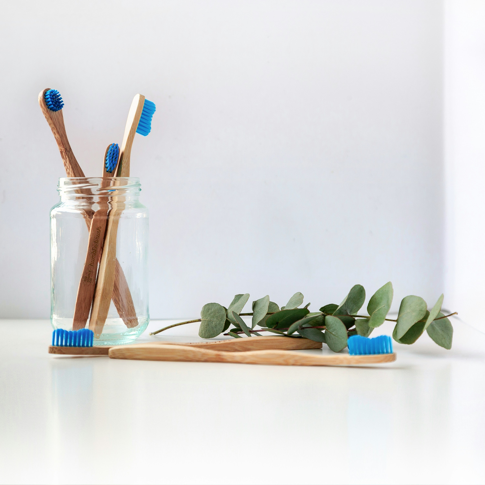
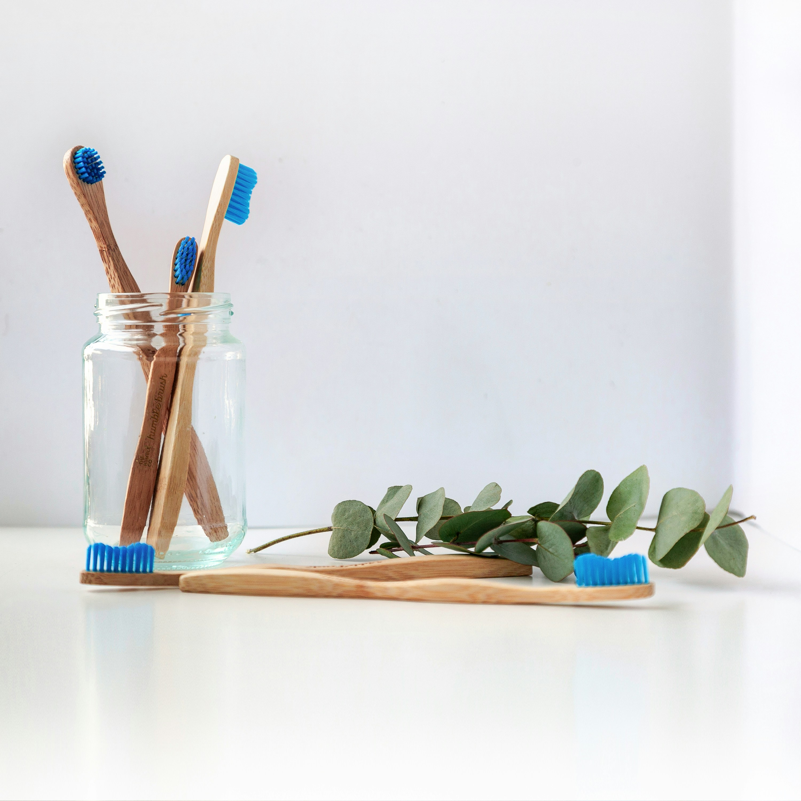

Какво представлява бондингът?
Бондингът е козметична дентална процедура, при която върху зъбите се нанася и втвърдява композитна смола в цвета на зъба. Това е една от най-лесните и достъпни процедури за подобряване на вида на усмивката.
Кога е подходящ бондингът?
- За коригиране на леко отчупени или пукнати зъби.
- За промяна на формата и размера на зъбите.
- За затваряне на разстояния (диастеми) между зъбите.
- За подобряване на цвета на зъби с петна.

 
